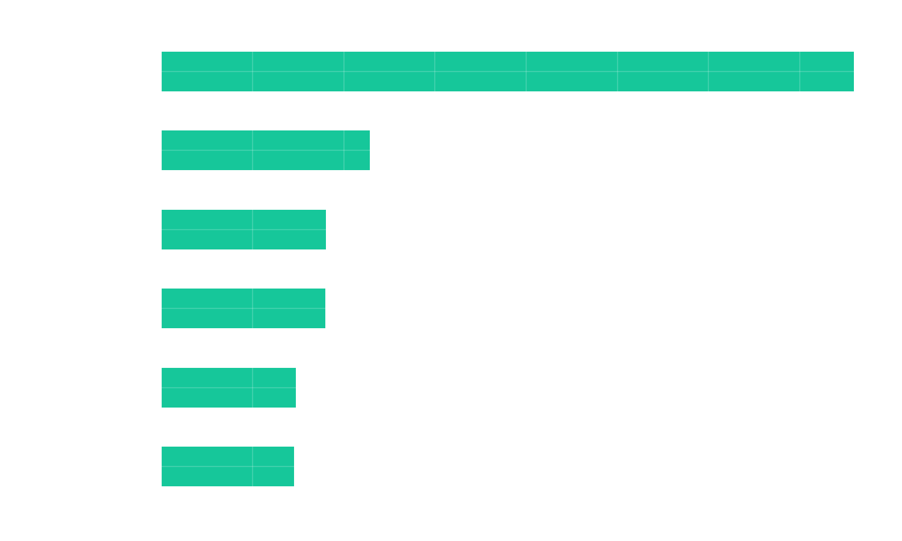

A high-fidelity investigation into two decades of public safety data. Visualizing the trends, hotspots, and statistics that define San Francisco's history.
Witness how crime pattern peaks follow the city's heartbeat. This animation normalizes data across categories, highlighting which hours are disproportionately active for specific crimes. Use the slider to track 20+ years of change.
A formal choropleth analysis by SF Police District. By aggregating total incidents into geographic boundaries, we can objectively identify which precincts bear the highest reporting load.

A definitive scale of the focus crimes tracked in this study. This chart provides the baseline understanding of which categories dominant the city's historical logbook.